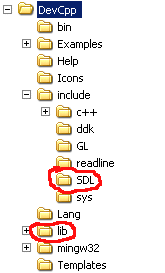
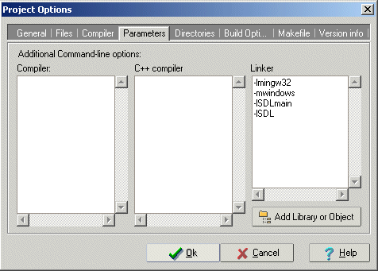
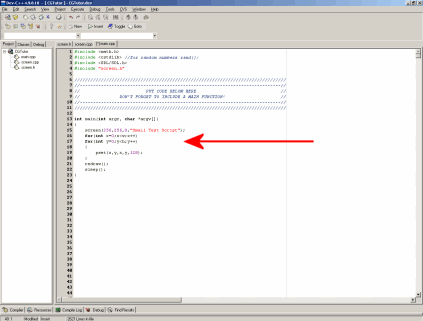
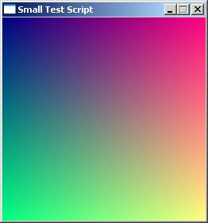
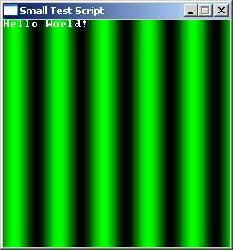
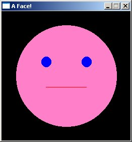

如果你使用本教程提供的 SDL 1.2 代码库（QuickCG），请将其解压到你的代码文件夹（即存放所有 DevC++ 项目和代码的文件夹，最好不要放在不可靠的 Windows"我的文档"文件夹中），然后用 Dev-C++ 打开其 *.dev 文件，即可正常编译和运行。编译时，请使用菜单中的"执行 -> 编译"。生成的 exe 文件将出现在代码所在的同一文件夹中。你可以通过"执行 -> 运行"来运行它，也可以按 F9 直接编译并运行项目。如果无法正常工作，请继续往下查看可能的解决方案列表。强烈建议在本教程中使用 QuickCG，因为教程的其余部分聚焦于其命令，而非 SDL 本身。 但如果你想在 DevC++ 中创建自己的新 SDL 项目（本教程不需要此操作）： 7) 启动 DevC++ 并新建一个项目，将所需的 .cpp 和 .h 文件添加进去。

int main(int argc, char *argv[])
|

int main(int argc, char *argv[])
|

int main(int argc, char *argv[])
|

| 变量 | 说明 |
| w | int w; 调用 screen 函数后，图形窗口的宽度。在本教程的示例中，w 最常用于遍历屏幕上每个像素的双重 for 循环中。 |
| h | int h; 调用 screen 函数后，图形窗口的高度。 |
| font | bool
font[256][8][8]; 这是 print 函数使用的字体。虽然可以在代码中访问和修改 font 变量，但通常不需要这样做。 |
| ColorRGB | 一个包含 3 个整数（命名为 r、g、b）的简单结构体，构造函数如下： ColorRGB(Uint8 r, Uint8 g, Uint8 b); ColorRGB(ColorRGB8bit color); ColorRGB(); 此外还预定义了一些 RGB 颜色： static const ColorRGB RGB_Black ( 0, 0, 0); static const ColorRGB RGB_Red (255, 0, 0); static const ColorRGB RGB_Green ( 0, 255, 0); static const ColorRGB RGB_Blue ( 0, 0, 255); static const ColorRGB RGB_Cyan ( 0, 255, 255); static const ColorRGB RGB_Magenta (255, 0, 255); static const ColorRGB RGB_Yellow (255, 255, 0); static const ColorRGB RGB_White (255, 255, 255); static const ColorRGB RGB_Gray (128, 128, 128); static const ColorRGB RGB_Grey (192, 192, 192); static const ColorRGB RGB_Maroon (128, 0, 0); static const ColorRGB RGB_Darkgreen( 0, 128, 0); static const ColorRGB RGB_Navy ( 0, 0, 128); static const ColorRGB RGB_Teal ( 0, 128, 128); static const ColorRGB RGB_Purple (128, 0, 128); static const ColorRGB RGB_Olive (128, 128, 0); ColorRGB 类还定义了 "+"、"-"、"*"、"/"、"==" 和 "!=" 运算符，以便更方便地进行颜色加法、与整数相乘等颜色运算。 |
| ColorRGB8bit | 一个包含 3 个 Uint8 类型（命名为 r、g、b）的简单结构体，构造函数如下： ColorRGB8bit(Uint8 r, Uint8 g, Uint8 b); ColorRGB8bit(ColorRGB color); ColorRGB8bit(); |
| ColorHSL | 一个包含 3 个整数（命名为 h、s、l）的简单结构体，构造函数如下： ColorHSL(Uint8 h, Uint8 s, Uint8 l); ColorHSL(); |
| ColorHSV | 一个包含 3 个整数（命名为 h、s、v）的简单结构体，构造函数如下： ColorHSV(Uint8 h, Uint8 s, Uint8 v); ColorHSV(); |
| Uint8 | 无符号 8 位整数，本教程中用于颜色分量 |
| Sint8 | 有符号 8 位整数 |
| Uint16 | 无符号 16 位整数 |
| Sint16 | 有符号 16 位整数 |
| Uint32 | 无符号 32 位整数 |
| Sint32 | 有符号 32 位整数 |
| Uint64 | 无符号 64 位整数 |
| Sint64 | 有符号 64 位整数 |
| 函数 | 说明 |
| screen |
void screen(int width, int height, bool fullscreen, char* text=" "); 这可能是最重要的函数，因为它不仅创建图形屏幕，还初始化整个 SDL 上下文。即使不需要显示屏幕，也要在程序开始时调用此函数。整数 width 和 height 决定窗口的分辨率。如果 fullscreen 为 0，则以窗口模式运行；如果为 1，则全屏显示。text 可用于设置窗口标题。例如，要创建一个标题为"Hello"的 640*480 像素窗口，请使用： screen(640,480,0,"Hello"); |
| keyDown |
bool keyDown(int key); 在当前帧调用 readKeys() 或 done() 函数之后，此函数可以检查每个按键是否被按下。例如，要检查"a"键是否被按下，可以判断 keyDown(SDLK_a) 是否为 true。所有按键的完整列表请参见下方的 SDL 按键表。 |
| keyPressed |
bool keyPressed(int key); 与 keyDown() 类似，但区别在于：keyDown 在按键被按住期间持续返回 true，而 keyPressed 只在第一次检测时返回 true，只有当按键被释放后再次按下时才会再次返回 true。因此，keyDown 适合用于游戏中持续向前移动的按键，而 keyPressed 则适合用于选择武器等只需触发一次的按键。 |
| redraw |
void redraw(); 重新绘制屏幕。绘制像素、圆形和直线等内容后，在调用 redraw() 之前不会显示出来。此函数相对较慢，因此不要在每绘制一个像素后就调用它，而应在整个屏幕绘制完成后只调用一次。 |
| cls |
void cls(int R = 0, int G = 0, int B = 0); 将屏幕清除为黑色。例如，在制作弹跳球程序时，每次都需要在新位置绘制圆形，如果不使用 cls()，旧位置的圆形仍然可见。也可以将屏幕清除为指定的 RGB 颜色。 |
| pset |
void pset(int x, int y, ColorRGB color); 在屏幕的 x、y 位置（x 必须在 0 到 w-1 之间，y 必须在 0 到 h-1 之间）绘制一个指定 RGB 颜色的像素。ColorRGB 颜色包含 3 个分量 r、g、b，其值范围均为 0 到 255。 |
| pget |
ColorRGB pget(int x, int y); 返回位置 x、y 处像素的颜色值。此操作需要从显卡内存中读取颜色，速度较慢。如果需要频繁调用此函数（例如处理透明度或填充操作时），最好使用缓冲区来保存颜色数据，从缓冲区中读取，并通过 drawBuffer 将缓冲区绘制到屏幕上。 |
| drawBuffer | void drawBuffer(Uint32 *buffer); 一次性将整个缓冲区绘制到屏幕上。缓冲区必须与屏幕大小完全相同，是一个二维数组。颜色值以 24 位格式存储在一个整数中，而非 3 个独立的 8 位变量。如果能使用缓冲区，其速度可能比逐像素绘制快得多。 |
| onScreen | bool onScreen(int x, int y); 检查坐标为 x、y 的点是否在屏幕范围内，即是否位于矩形 (0, 0) - ((w - 1), (h - 1)) 之内。 |
| sleep |
void sleep(); 调用此函数后，程序将暂停，直到你按下任意键。 |
| waitFrame | void waitFrame(double oldTime, double frameDuration); 此函数用于将效果限制在最大帧率以内。参数 oldTime 是上一帧调用 waitFrame 后的时间，frameDuration 是每帧的秒数（例如每帧 0.05 秒即为每秒 20 帧）。它会等待，直到距上一帧的最短时间间隔过去为止。 |
| done |
bool done(); 此函数返回是否应关闭程序，即当你按下 Escape 键或点击窗口关闭按钮时返回 true。在 while 循环中如下使用此函数："while(!done()) {code goes here}"。循环将持续运行，直到你按下 Escape 键或点击窗口关闭按钮为止。 |
| End 键 |
void end(); 调用此函数将立即结束程序。 |
| readKeys |
void readKeys(); 此函数使用 SDL 事件检测哪些按键被按下，并将结果存入全局变量 inkeys[]。 |
| getMouseState | void getMouseState(int& mouseX, int& mouseY, bool& LMB, bool& RMB); 将鼠标的位置和按键状态存入给定的变量（通过引用传递）：mouseX 为鼠标光标的 x 坐标，mouseY 为鼠标光标的 y 坐标，LMB 为 true 表示左键被按下，RMB 为 true 表示右键被按下。 |
| getMouseState | void getMouseState(int& mouseX, int& mouseY); 将鼠标位置存入给定的变量（通过引用传递）：mouseX 为鼠标光标的 x 坐标，mouseY 为鼠标光标的 y 坐标。 |
| getTicks |
long getTicks(); 此函数返回程序启动以来经过的时间（以毫秒为单位）。 |
| max | max(x, y) 返回 x 和 y 中的较大值，适用于任意类型，通过预处理器命令定义。 |
| min | min(x, y) 返回 x 和 y 中的较小值，适用于任意类型，通过预处理器命令定义。 |
| horLine |
bool horLine(int y, int x1, int x2, ColorRGB color); 从位置 x1、y 到 x2、y 绘制一条指定颜色的水平线。如果需要绘制水平线，此函数比 drawLine() 稍快。 |
| verLine |
bool verLine(int x, int y1, int y2, ColorRGB color); 从位置 x1、y 到 x2、y 绘制一条指定颜色的垂直线。如果需要绘制垂直线，此函数比 drawLine() 稍快。 |
| drawLine |
bool drawLine(int x1, int y1, int x2, int y2, ColorRGB color); 使用 Bresenham 直线绘制算法，从 x1、y1 到 x2、y2 绘制一条指定颜色的直线。注意所有坐标必须在屏幕范围内，否则程序会崩溃。如果需要绘制任意直线，可以结合使用 clipLine() 和 drawLine()，因为 drawLine 本身无法绘制超出屏幕范围的线段，当任意端点超出屏幕时将返回 0。 |
| drawCircle |
bool drawCircle(int xc, int yc, int radius, ColorRGB color); 以 xc、yc 为圆心，绘制一个指定半径和 RGB 颜色的圆形。这是一个空心圆。 |
| drawDisk |
bool drawCisk(int xc, int yc, int radius, ColorRGB color); 与 drawCircle 类似，但绘制的是填充圆。 |
| drawRect |
bool drawRect(int x1, int y1, int x2, int y2, ColorRGB color); 以 x1、y1 和 x2、y2 为对角顶点，绘制一个指定颜色的矩形。 |
| clipLine |
bool clipLine(int x1, int y1, int x2, int y2, int & x3, int & y3, int & x4, int &
y4); 当需要将待绘制直线的端点裁剪到屏幕范围内时使用此函数。向函数传入坐标为 x1、y1-x2、y2 的直线，它将返回坐标为 x3、y3-x4、y4 的直线，该直线位于屏幕边缘或屏幕内部（即矩形 0、w-0、h 内）。x3、y3、x4 和 y4 需以引用方式传入，例如使用 "clipLine(x1, y1, x2, y2, x3, y3, x4, y4)"，其中 x3、y3、x4 和 y4 是可被函数修改的普通整数，用于接收新直线的坐标。若直线在屏幕上则返回 1，否则返回 0。 |
| RGBtoHSL |
ColorHSL RGBtoHSL(ColorRGB colorRGB); 将颜色从 RGB 色彩模型转换为 HSL 色彩模型。 |
| HSLtoRGB |
ColorRGB HSLtoRGB(ColorHSL colorHSL); 将颜色从 HSL 色彩模型转换为 RGB 色彩模型。 |
| RGBtoHSV |
ColorHSV RGBtoHSV(ColorRGB colorRGB); 将颜色从 RGB 色彩模型转换为 HSV 色彩模型。 |
| HSVtoRGB |
ColorRGB HSVtoRGB(ColorHSV colorHSV); 将颜色从 HSV 色彩模型转换为 RGB 色彩模型。 |
| RGBtoINT | Uint32 RGBtoINT(ColorRGB colorRGB); 将颜色从 RGB 格式转换为适用于显存结构的单个整数。 |
| INTtoRGB | ColorRGB INTtoRGB(Uint32 colorINT); 将颜色从单个整数转换为 ColorRGB 结构体中的 3 个字节：r、g 和 b。 |
| loadImage |
int loadImage(std::vector 将指定文件名的 PNG 图像（不支持其他图像格式）加载到 std::vector 中，同时返回图像的宽度和高度。如果加载过程中出现问题，函数返回"1"表示"错误"。 |
| loadImage | int loadImage(std::vector |
|
template<typename T> int print(const T& val, int x = 0, int y = 0, const ColorRGB& color = RGB_White, bool bg = 0, const ColorRGB& color2 = RGB_Black); 使用标准 IBM ASCII 字体在屏幕上绘制文字，该字体由 256 个 8*8 像素的字符组成。 "*text" 是要输出的文字，"x" 和 "y" 是第一个字母左上角的位置（以像素为单位），"color" 是前景色，"color2" 是背景色，"bg" 控制背景是否可见：bg 为 0 时背景不可见，bg 为 1 时背景完全不透明。参数 forceLength 是最小打印长度，若字符串较短，则在其后补充打印 0 个字符（在启用背景且需要覆盖固定长度区域时很有用）。返回值为 h * x + y，其中 x 是下一个字母的 x 坐标，y 是下一个字母的 y 坐标，h 是屏幕高度。此返回值可用于确定下一个紧跟当前文字的 print 命令的起始位置：x 坐标为 returnvalue / h，y 坐标为 returnvalue % h。 |
|
| getInputString | void getInputString(std::string& text, const std::string& message = "", bool clear = false, int x = 0, int y = 0, const ColorRGB& color = RGB_White, bool bg = 0, const ColorRGB& color2 = RGB_Black); 打印提示信息，之后用户可以输入一个字符串，该字符串存储在 text 中。布尔值 "clear" 决定用户按下回车键后文字是否仍然可见。 |
| getInput | template<typename T> T getInput(const std::string& message = "", bool clear = false, int x = 0, int y = 0, const ColorRGB& color = RGB_White, bool bg = 0, const ColorRGB& color2 = RGB_Black); 将用户输入转换为任意类型的变量。 |
| 运算符 | 说明 |
| +, -, *, / | 加、减、乘、除。其中部分运算符也为 QuickCG 的矩阵和向量定义了重载。 |
| % | 取模除法 |
| & | 按位与 |
| | | 按位或 |
| ^ | 按位异或 |
| = | 赋值 |
| 条件运算符 | |
| &&, || | 逻辑与和逻辑或（用于条件判断） |
| == | 是否相等？ |
| != | 不等于 |
| >,<, >=, <= | 大于、小于、大于等于、小于等于 |
| 函数 | 说明 |
| sqrt(x) | x 的平方根 |
| cos(x), sin(x), tan(x) | 余弦、正弦和正切（以弧度为单位） |
| acos(x), asin(x), atan(x) | 余弦、正弦和正切的反函数 |
| pow(x, y) | 一个实数的另一个实数次幂 |
| ln(x) | 自然对数 |
| exp(x) | 实数的指数函数值 |
| int(x), float(x), double(x) | 转换为整数或浮点数。两个整数相除时，结果将是整数，除非将其中一个转换为浮点数。 |
| floor(x) | 返回不大于该数的最大整数，例如 3.1 变为 3.0。仅适用于浮点数和双精度浮点数。 |
| ceil(x) | 返回不小于该数的最小整数，例如 3.1 变为 4.0。仅适用于浮点数和双精度浮点数。 |
| abs(x), fabs(x) | 返回 x 的绝对值。abs 用于整数，fabs 用于浮点数和双精度浮点数。 |
| 变量的地址 |
|
| 创建指向变量的指针 |
|
| 创建一个 80 * 90 * 100 的三维数组 | float arrayName[80][90][100]; |
| 访问 80 * 90 * 100 三维数组中下标为 10、20、30 的元素 | arrayName[10][20][30] 或 arrayName[90 * 100 * 10 + 100 * 20 + 30] |
| 以"地址传递"方式传递变量，使函数能够修改它 |
|
| 以"引用传递"方式传递变量，使函数能够修改它 |
|
| 以"const 引用"方式传递变量，使函数可以读取而无需复制（传递大型数据结构时复制会很低效） |
|
| 向函数传递一维数组，使函数可以读取和修改它 |
|
| 向函数传递三维数组 |
|
| std::vectors | 对于动态大小的数组，C++ 标准库中的 std::vectors<Type> 更加实用。包含头文件 <vector> 即可使用。它提供了调整大小、获取大小、清空、在末尾追加元素等函数，成员也可以像 C 风格数组一样用 [] 访问。由于它是大型数据结构，向函数传递时应使用（const）引用。 |
| SDLKey | ASCII 值 | 常用名称 |
|---|---|---|
| SDLK_BACKSPACE | '\b' | 退格键 |
| SDLK_TAB | '\t' | 制表键 |
| SDLK_CLEAR | 清除键 | |
| SDLK_RETURN | '\r' | 回车键 |
| SDLK_PAUSE | 暂停键 | |
| SDLK_ESCAPE | '^[' | Escape 键 |
| SDLK_SPACE | ' ' | 空格键 |
| SDLK_EXCLAIM | '!' | 感叹号 |
| SDLK_QUOTEDBL | '"' | 双引号 |
| SDLK_HASH | '#' | 井号 |
| SDLK_DOLLAR | '$' | 美元符号 |
| SDLK_AMPERSAND | '&' | 与号 |
| SDLK_QUOTE | ''' | 单引号 |
| SDLK_LEFTPAREN | '(' | 左括号 |
| SDLK_RIGHTPAREN | ')' | 右括号 |
| SDLK_ASTERISK | '*' | 星号 |
| SDLK_PLUS | '+' | 加号 |
| SDLK_COMMA | ',' | 逗号 |
| SDLK_MINUS | '-' | 减号 |
| SDLK_PERIOD | '.' | 句点 |
| SDLK_SLASH | '/' | 正斜杠 |
| SDLK_0 | '0' | 0 |
| SDLK_1 | '1' | 1 |
| SDLK_2 | '2' | 2 |
| SDLK_3 | '3' | 3 |
| SDLK_4 | '4' | 4 |
| SDLK_5 | '5' | 5 |
| SDLK_6 | '6' | 6 |
| SDLK_7 | '7' | 7 |
| SDLK_8 | '8' | 8 |
| SDLK_9 | '9' | 9 |
| SDLK_COLON | ':' | 冒号 |
| SDLK_SEMICOLON | ';' | 分号 |
| SDLK_LESS | '<' | 小于号 |
| SDLK_EQUALS | '=' | 等号 |
| SDLK_GREATER | '>' | 大于号 |
| SDLK_QUESTION | '?' | 问号 |
| SDLK_AT | '@' | at 符号 |
| SDLK_LEFTBRACKET | '[' | 左方括号 |
| SDLK_BACKSLASH | '\' | 反斜杠 |
| SDLK_RIGHTBRACKET | ']' | 右方括号 |
| SDLK_CARET | '^' | 脱字符 |
| SDLK_UNDERSCORE | '_' | 下划线 |
| SDLK_BACKQUOTE | '`' | 重音符 |
| SDLK_a | 'a' | a |
| SDLK_b | 'b' | b |
| SDLK_c | 'c' | c |
| SDLK_d | 'd' | d |
| SDLK_e | 'e' | e |
| SDLK_f | 'f' | f |
| SDLK_g | 'g' | g |
| SDLK_h | 'h' | h |
| SDLK_i | 'i' | i |
| SDLK_j | 'j' | j |
| SDLK_k | 'k' | k |
| SDLK_l | 'l' | l |
| SDLK_m | 'm' | m |
| SDLK_n | 'n' | n |
| SDLK_o | 'o' | o |
| SDLK_p | 'p' | p |
| SDLK_q | 'q' | q |
| SDLK_r | 'r' | r |
| SDLK_s | 's' | s |
| SDLK_t | 't' | t |
| SDLK_u | 'u' | u |
| SDLK_v | 'v' | v |
| SDLK_w | 'w' | w |
| SDLK_x | 'x' | x |
| SDLK_y | 'y' | y |
| SDLK_z | 'z' | z |
| SDLK_DELETE | '^?' | Delete 键 |
| SDLK_KP0 | 小键盘 0 | |
| SDLK_KP1 | 小键盘 1 | |
| SDLK_KP2 | 小键盘 2 | |
| SDLK_KP3 | 小键盘 3 | |
| SDLK_KP4 | 小键盘 4 | |
| SDLK_KP5 | 小键盘 5 | |
| SDLK_KP6 | 小键盘 6 | |
| SDLK_KP7 | 小键盘 7 | |
| SDLK_KP8 | 小键盘 8 | |
| SDLK_KP9 | 小键盘 9 | |
| SDLK_KP_PERIOD | '.' | 小键盘句点 |
| SDLK_KP_DIVIDE | '/' | 小键盘除号 |
| SDLK_KP_MULTIPLY | '*' | 小键盘乘号 |
| SDLK_KP_MINUS | '-' | 小键盘减号 |
| SDLK_KP_PLUS | '+' | 小键盘加号 |
| SDLK_KP_ENTER | '\r' | 小键盘回车 |
| SDLK_KP_EQUALS | '=' | 小键盘等号 |
| SDLK_UP | 上方向键 | |
| SDLK_DOWN | 下方向键 | |
| SDLK_RIGHT | 右方向键 | |
| SDLK_LEFT | 左方向键 | |
| SDLK_INSERT | Insert 键 | |
| SDLK_HOME | Home 键 | |
| SDLK_END | End 键 | |
| SDLK_PAGEUP | Page Up 键 | |
| SDLK_PAGEDOWN | Page Down 键 | |
| SDLK_F1 | F1 | |
| SDLK_F2 | F2 | |
| SDLK_F3 | F3 | |
| SDLK_F4 | F4 | |
| SDLK_F5 | F5 | |
| SDLK_F6 | F6 | |
| SDLK_F7 | F7 | |
| SDLK_F8 | F8 | |
| SDLK_F9 | F9 | |
| SDLK_F10 | F10 | |
| SDLK_F11 | F11 | |
| SDLK_F12 | F12 | |
| SDLK_F13 | F13 | |
| SDLK_F14 | F14 | |
| SDLK_F15 | F15 | |
| SDLK_NUMLOCK | 数字锁定键 | |
| SDLK_CAPSLOCK | 大写锁定键 | |
| SDLK_SCROLLOCK | 滚动锁定键 | |
| SDLK_RSHIFT | 右 Shift 键 | |
| SDLK_LSHIFT | 左 Shift 键 | |
| SDLK_RCTRL | 右 Ctrl 键 | |
| SDLK_LCTRL | 左 Ctrl 键 | |
| SDLK_RALT | 右 Alt 键 | |
| SDLK_LALT | 左 Alt 键 | |
| SDLK_RMETA | 右 Meta 键 | |
| SDLK_LMETA | 左 Meta 键 | |
| SDLK_LSUPER | 左 Windows 键 | |
| SDLK_RSUPER | 右 Windows 键 | |
| SDLK_MODE | 模式切换键 | |
| SDLK_HELP | 帮助键 | |
| SDLK_PRINT | 截屏键 | |
| SDLK_SYSREQ | SysRq | |
| SDLK_BREAK | Break 键 | |
| SDLK_MENU | 菜单键 | |
| SDLK_POWER | 电源键 | |
| SDLK_EURO | 欧元符号键 |
| SDL 修饰键 | 含义 |
|---|---|
| KMOD_NONE | 无修饰键 |
| KMOD_NUM | 数字锁定键已按下 |
| KMOD_CAPS | 大写锁定键已按下 |
| KMOD_LCTRL | 左 Ctrl 键已按下 |
| KMOD_RCTRL | 右 Ctrl 键已按下 |
| KMOD_RSHIFT | 右 Shift 键已按下 |
| KMOD_LSHIFT | 左 Shift 键已按下 |
| KMOD_RALT | 右 Alt 键已按下 |
| KMOD_LALT | 左 Alt 键已按下 |
| KMOD_CTRL | 某个 Ctrl 键已按下 |
| KMOD_SHIFT | 某个 Shift 键已按下 |
| KMOD_ALT | 某个 Alt 键已按下 |